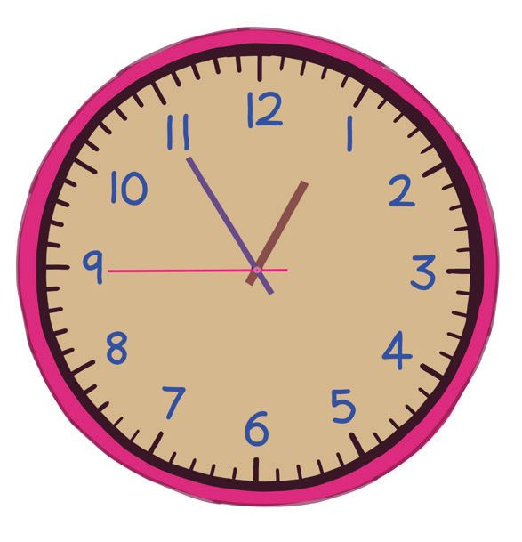

ഇത് ആരുടെ ചിത്രമാണ്?
2015 ൽ കേര- ള - ത്ത ഇൽ നടന്ന
ദേശീയ ഗെയിംസിന്റെ ഭാഗ്യചിഹ്നമാണ് അമ്മു.
ഇനി ഈ പട്ടിക നോക്കൂ.
ഗെയിംസിലെ ആദ്യത്തെ അഞ്ച്
സ്ഥാനക്കാർ നേടിയ മെഡലുകളുടെ എണ്ണമാണ് പട്ടിക-യിൽ.
നമ്പർ
ടീം
സ്വർണം
വെള്ളി
വെങ്കലം
സർവീസസ് 91
33
35
2
കേരളം
54
48
60
3
ഹരിയാന
40
40
27
4
മഹാരാഷ്ട്ര 30
43
50
പഞ്ചാബ്
27
34
32
5
ഏറ്റവും കൂടുതൽ സ്വർണമെഡലുകൾ നേടിയ ടീം ഏതാണ്?
ഏറ്റവും കൂടുതൽ മെഡലുകൾ നേടിയ ടീം ഏത്?
ഇത്തര-ം കൂടുതൽ ചോദ്യങ്ങൾ തയാറാക്കൂ.
1
145
Page 66
Figure fig_ch05_p066_01 (Page 66)
$ കേരളം കൂടുതൽ തിളങ്ങിയത് അത്ലറ്റിക്സ് വിഭാഗ-ത്തിലാണ്. അത്ലറ്റിക്സിലെ ആദ്യത്തെ നാല് സ്ഥാനക്കാരെ അപ്പു പട്ടിക-പ്പെടുത്തിയതു
നോക്കൂ.
നമ്പർ
ടീം
സ്വർണം വെള്ളി വെങ്കലം
1
കേരളം
9
10
8
2
സർവീസസ്
7
1
5
3
പഞ്ചാബ്
5
5
5
ഉത്തർപ്രദേശ്
3
5
2
4
അഞ്ചിൽ കൂടുതൽ സ്വർണമെഡ-ലുകൾ നേടിയത് ഏതൊക്കെ ടീമുകളാണ്?
സ്വർണമെഡ-ലിനെക്കാൾ കൂടുതൽ വെള്ളിമെഡൽ നേടീയ ടീമുകൾ
ഏതൊക്കെയാണ്?
കൂടുതൽ ചോദ്യങ്ങൾ കണ്ടെത്തുമല്ലോ.
വിലയിരുത്താം
ഗണിത പരീക്ഷയിൽ അപ്പുവിന്റെ ക്ലാസിലെ കുട്ടികൾക്ക് ലഭിച്ച ഗ്രേഡ് നോക്കൂ.
നമ്പർ
പേര്
ഗ്രേഡ്
നമ്പർ പേര്
ഗ്രേഡ്
അപർണ
അ
11
അക്ഷയ
അ
2
അപ്പു
ആ
12
അശ്വതി
ആ
3
ജോൺ
ഇ
13
തീർഥ
അ
4
ഇജാസ്
ഇ
14
അഞ്ജു
ആ
5
മിഥില
അ
15
സാരങ്ങ്
ആ
6
ആദിത്യൻ
ആ
16
അനുജിത്ത്
ഇ
7
ജോസ്
ആ
17
മഹേഷ്
അ
8
ഇർഫാൻ
ആ
18
ഫസ്ന
ആ
9
ലിസി
ഉ
19
നദ
ഇ
10
ജസ്ന
ഇ
20
ശ്രീക്കുട്ടൻ
അ
അ ഗ്രേഡ് കിട്ടിയ കുട്ടിക-ളുടെ എണ്ണം എത്ര?
ആ ഗ്രേഡ് കിട്ടിയ കുട്ടിക-ളുടെ എണ്ണം എത്ര?
ഇ ഗ്രേഡ് കിട്ടിയ കുട്ടിക-ളുടെ എണ്ണം എത്ര?
ഉ ഗ്രേഡ് കിട്ടിയ കുട്ടിക-ളുടെ എണ്ണം എത്ര?
ഓരോ ഗ്രേഡും കിട്ടിയവ-രുടെ എണ്ണം കാണിക്കുന്ന പട്ടിക തയാറാക്കാം.
1
146
Page 67
Figure fig_ch05_p067_01 (Page 67)
ഗ്രേഡ്
കുട്ടിക-ളുടെ എണ്ണം
അ
ആ
ഇ
ഉ
ഋ
ഗ്രേഡോ അതിൽ കൂടുതലോ കിട്ടിയത് എത്ര കുട്ടികൾക്കാണ്?
ഉ ഗ്രേഡോ അതിൽ കുറവോ കിട്ടിയത് എത്ര കുട്ടികൾക്കാണ്?
കൂടുതൽ ചോദ്യങ്ങൾ തയാറാക്കുക.
ആ
ആരാണ് മെച്ചം?
അപ്പുവിന്റെയും തീർഥയുടെയും ബെഞ്ചുക-ളിലെ കുട്ടിക-ൾക്ക് ഓരോ വിഷയത്തിലും ലഭിച്ച ഗ്രേഡ് താഴെ കൊടുക്കുന്നു.
പേര്
അപ്പു
ശ്രീക്കുട്ടൻ
മഹേഷ്
സാരങ്ങ്
ജോസ്
പേര്
തീർഥ
ആതിര
അഞ്ജു
ഫസ്ന
മിഥില
മലയാളം
ഇംഗ്ലീഷ് പരിസരപഠനം ഗണിതം
അ
അ
അ
ആ
അ
അ
അ
അ
അ
ആ
ആ
അ
അ
അ
ആ
ആ
അ
ആ
അ
ആ
മലയാളം
ഇംഗ്ലീഷ് പരിസരപഠനം ഗണിതം
അ
അ
അ
അ
അ
അ
അ
ആ
അ
ആ
അ
അ
അ
ആ
അ
ആ
അ
അ
അ
അ
-പട്ടിക താരതമ്യം ചെയ്യൂ.
അപ്പുവിന്റെ ബെഞ്ചിൽ ആർക്കാണ് എല്ലാ വിഷയ-ങ്ങൾക്കും അ ഗ്രേഡ്
കിട്ടിയത്?
147
തീർഥയുടെ ബെഞ്ചിൽ ഏതെല്ലാം വിഷയ-ങ്ങൾക്കാണ് എല്ലാ കുട്ടികൾക്കും എ ഗ്രേഡ് കിട്ടിയത്?
എല്ലാ വിഷയ-ങ്ങൾക്കും എ ഗ്രേഡ് കിട്ടിയ കുട്ടികൾ ആരുടെ ബെഞ്ചിലാണ് കൂടുതൽ?
നിങ്ങളുടെ ബെഞ്ചിലെ കുട്ടികൾക്കു ലഭിച്ച ഗ്രേഡുകൾ പട്ടിക-പ്പെടുത്തി
ചോദ്യങ്ങൾ തയാറാക്കൂ. അവയുടെ ഉത്തര-ങ്ങളും എഴുതുക.
പഠന-യാത്ര
നാലാം ക്ലാസിൽ നിന്നും പഠന-യാത്രയ്ക്ക് പോകുക-യാണ്. അ യിൽ
നിന്ന് 18 കുട്ടികളും ആ യിൽ നിന്ന് 12 കുട്ടികളും ഇ, ഉ എന്നീ ഡിവിഷനുക-ളിൽ നിന്ന് 15 കുട്ടികൾ വീതവും പഠന-യാത്രയ്ക്കു പോയി.
ക്ലാസ് ഡിവിഷനും പഠന-യാത്രയ്ക്കു പോയവ-രുടെ എണ്ണവും കാണിക്കുന്ന പട്ടിക തയാറാക്കുക.
പാർക്കിൽ കളിക്കാം
എന്തൊക്കെയാണ് നിങ്ങൾ പാർക്കിൽ കാണുന്നത്?
ഓരോന്നും എത്ര വീതമുണ്ട്?
ചിത്രം നോക്കി പട്ടിക പൂർത്തിയാക്കുക.
പാർക്കിൽ ഞാൻ കണ്ടത്
ബഹുവർണക്കുട
അകേ്വറിയം
ഊഞ്ഞാൽ
എണ്ണം
ഏഴഴക്!
തീർഥയ്ക്ക് ഇഷ്ടമായത് പാർക്കിലെ ബഹുവർണക്കുട-കളാണ്. അതിൽ ഏതൊക്കെ നിറങ്ങളുണ്ട്?
മഴവില്ല് കണ്ടില്ലേ.
എത്ര നിറങ്ങളുണ്ട്?
അതിൽ നിങ്ങൾക്ക് ഏറ്റവും ഇഷ്ടമുള്ള നിറമേത്?
കൂട്ടുകാർക്കും ഇതേ നിറം തന്നെയാണോ ഇഷ്ടം?
താഴെ പട്ടിക-യിൽ നാഫിയ-യുടെ ക്ലാസിൽ മഴവില്ലിലെ
ഓരോ നിറവും ഇഷ്ടപ്പെടുന്നവ-രുടെ എണ്ണമാണ്.
നിറം
എണ്ണം
ഢ
4
നാഫിയ-യുടെ ക്ലാസിലെ കൂടുക
2
തൽ കുട്ടികൾ ഇഷ്ടപ്പെടുന്ന
നിറം ഏത്?
ആ
5
നിങ്ങ- ള ഉടെ ക്ലാസിൽ നിന്ന്
ഏ
3
വിവരം ശേഖരിച്ച് ഇതുപോലെ
ഥ
4
ഒരു പട്ടിക തയാറാക്കുക.
ഛ
3
ഞ
4
149
Page 70
Figure fig_ch05_p070_01 (Page 70)

Figure fig_ch05_p070_02 (Page 70)
ഗ്രന്ഥശാല-യിലേക്ക്
സ്കൂളിലേക്കു തിരികെ വരുന്ന വഴി അവർ പി.എൻ.-പണിക്കർ
സ്മാരക ഗ്രന്ഥശാല സന്ദർശിച്ചു.
ലൈബ്രറിയിലെ ഓരോ ഇനത്തിലെയും പുസ്തക-ങ്ങളുടെ എണ്ണം കാണിക്കുന്ന പട്ടിക-യാണ് താഴെയുള്ളത്. പട്ടിക പൂർത്തിയാക്കുക.
ഒരു പുസ്തക-ത്തിന്റെ ചിത്രം 100 എണ്ണത്തെ സൂചിപ്പിക്കുന്നു.
ഇനം
ബാലസാഹിത്യം
കഥ
കവിത
നോവൽ
ജീവച-രിത്രം
150
എണ്ണത്തെ സൂചിപ്പിക്കുന്ന ചിത്രം
ആകെ എണ്ണം
Page 71
Figure fig_ch05_p071_01 (Page 71)
എത്രയെണ്ണം?
വൃത്തവും ത്രികോണവും ചതുരവും ഉപയോഗിച്ച് രവി തയാറാക്കിയ
ഗണിത-ബോർഡിലെ ചിത്രങ്ങൾ നോക്കൂ.
ചിത്രം 1
ചിത്രം 2
ചിത്രം 3
ഓരോ ചിത്രവും ശ്രദ്ധിച്ചു നോക്കിയില്ലേ? ഇനി താഴെ കൊടുത്ത പട്ടികയിൽ ഓരോന്നും എത്രയെണ്ണം എന്നെഴുതി പട്ടിക പൂർത്തിയാക്കൂ.
ചിത്രം 1
ചിത്രം 2
ചിത്രം 3
ആകെ
151
തിരുകുളം പഞ്ചായ-ത്തിലെ 6 എൽ.-പി. സ്കൂളുക-ളിൽ ഈ വർഷം ഒന്നാം
ക്ലാസിൽ ചേർന്ന കുട്ടിക-ളുടെ എണ്ണമാണ് താഴെ പട്ടിക-യിൽ നൽകിയിട്ടുള്ളത്. (ഒരു കുട്ടിയുടെ ചിത്രം 10 പേരെ സൂചിപ്പിക്കുന്നു).
ആൺകുട്ടികൾ പെൺകുട്ടികൾ
കോഴിമല എൽ.-പി.-സ്കൂൾ
വടപുരം എൽ.-പി. സ്കൂൾ
മാമല്ലപുരം ജി.-എൽ.-പി.-സ്കൂൾ
പത്തനാകുളം എൽ.-പി.-സ്കൂൾ
പാലത്തിറ എൽ.-പി. സ്കൂൾ
തിരുമല ജി.-എൽ.-പി. സ്കൂൾ
ഒന്നാം ക്ലാസിലെ കുട്ടിക-ളുടെ ആകെ എണ്ണം എത്ര?
ÿ
ആൺകുട്ടിക-ളാണോ പെൺകുട്ടിക-ളാണോ കൂടുതൽ?
എത്ര പേർ?
കൂടുതൽ കുട്ടികൾ ഒന്നാംക്ലാസിൽ ചേർന്ന വിദ്യാലയം ഏത്?
എത്ര കുട്ടികൾ?
കുറവോ?
ഒന്നാം ക്ലാസിൽ ചേർന്ന മുഴുവൻ കുട്ടികൾക്കും സ്ലേറ്റ് നൽകാൻ പഞ്ചായത്ത് തീരുമാനിച്ചു.
ഒരു സ്ലേറ്റിന്റെ ചിത്രം 10 സ്ലേറ്റിനെ സൂചിപ്പിക്കുന്ന രീതിയിൽ പട്ടിക-യിൽ
6 സ്കൂളിനും ആവശ്യമായ എണ്ണം ചിത്രീക-രിക്കുക.
സ്കൂൾ
കോഴിമല എൽ.-പി.-സ്കൂൾ
വടപുരം എൽ.-പി. സ്കൂൾ
മാമല്ലപുരം ജി.-എൽ.-പി.-സ്കൂൾ
പത്തനാകുളം എൽ.-പി.-സ്കൂൾ
പാലത്തിറ എൽ.-പി. സ്കൂൾ
തിരുമല ജി.-എൽ.-പി. സ്കൂൾ
152
ആകെ കുട്ടികൾ സ്ലേയിറ്റിന്റെ ചിത്രീക-രണം
60
60
70
80
40
110